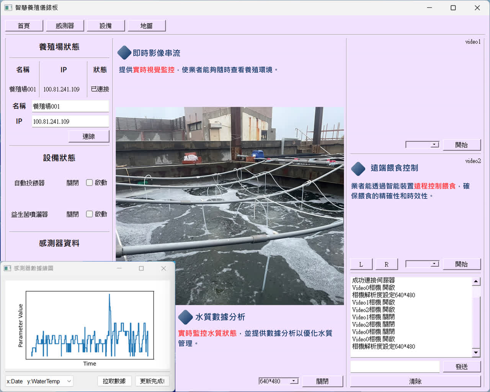
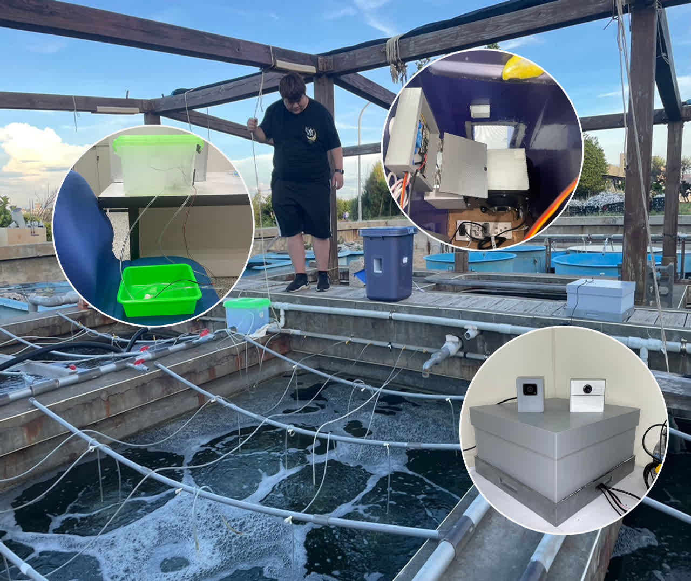
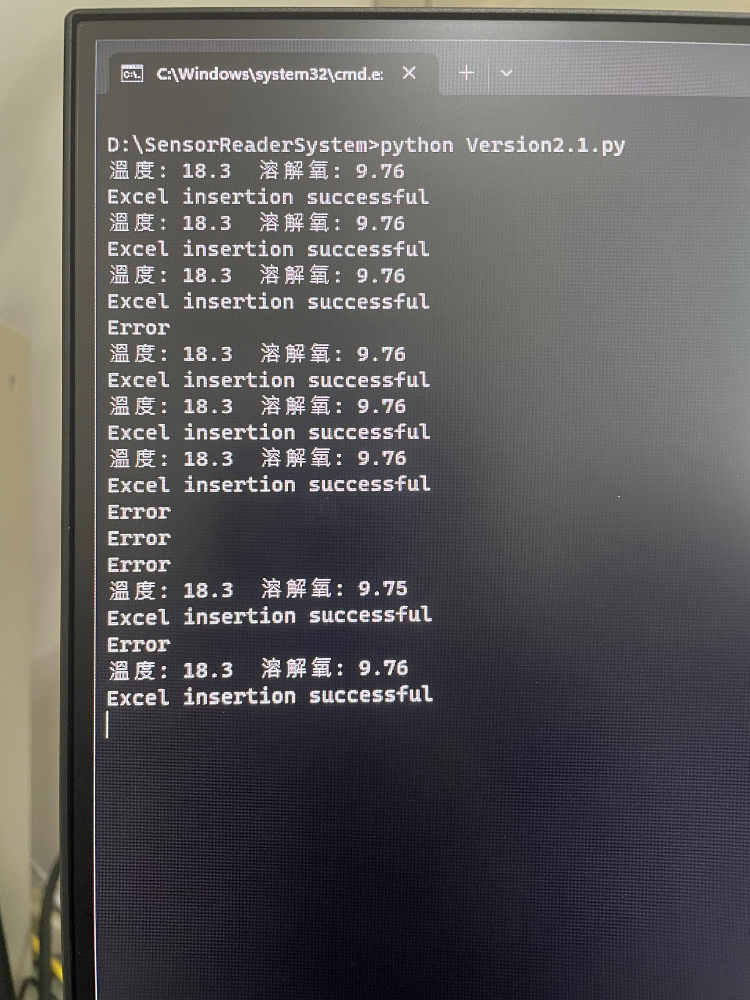
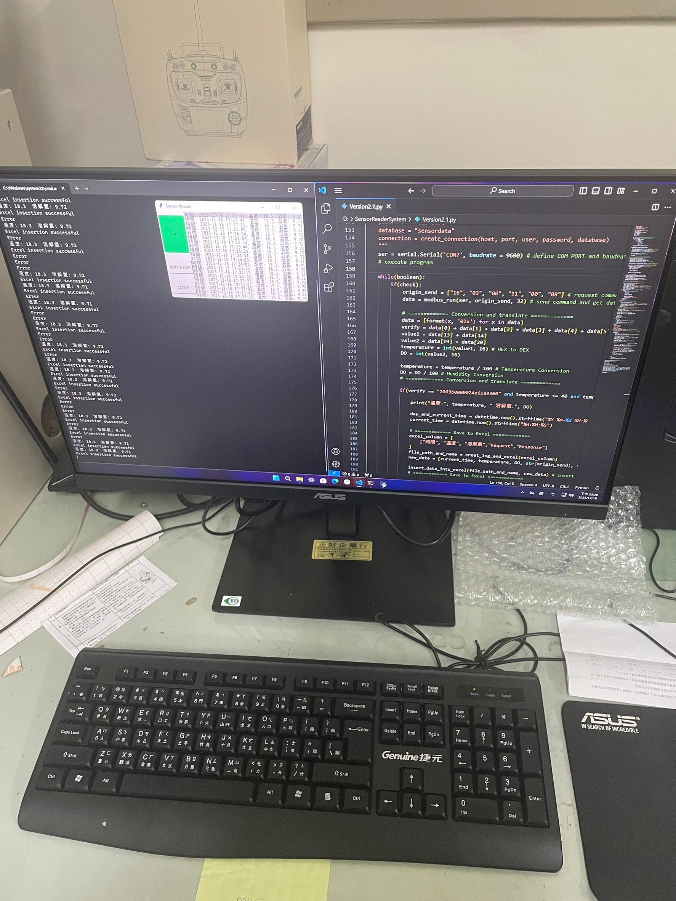
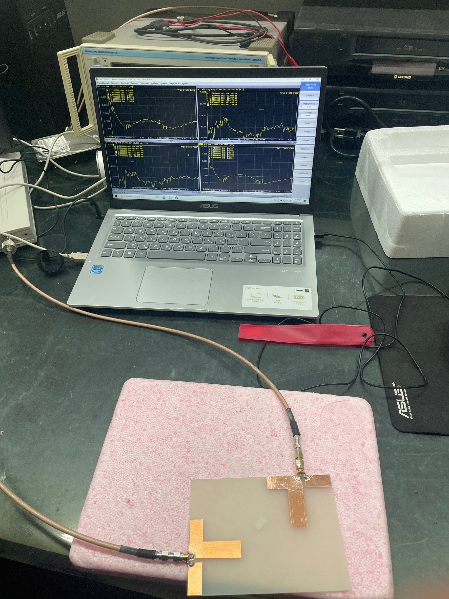
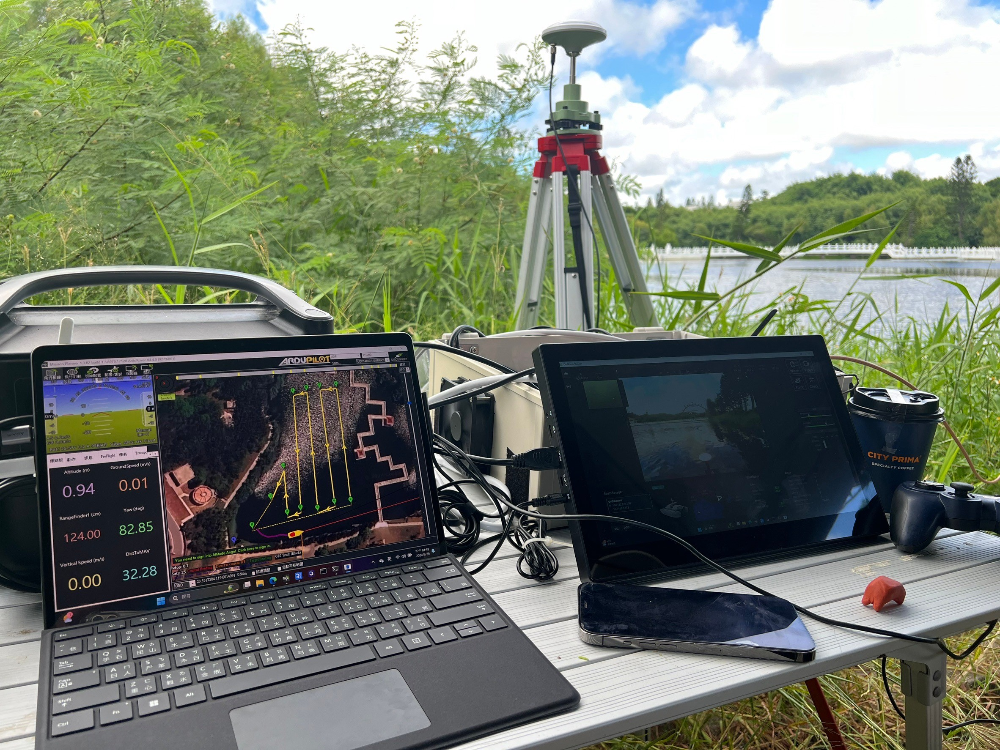

【專案故事：讓數據成為養殖業的守護神】
開發目標
長期以來，水產養殖高度仰賴職人的「經驗直覺」，但面對極端氣候與突發設備故障，經驗往往來不及阻止巨大的經濟損失。我們的目標是打造一套「具備自我感知與行動能力」的物聯網系統，將被動的巡視轉化為主動的防禦，讓養殖場實現真正的全天候數據化管理。
核心理念：穩固於底層，敏捷於雲端
我們堅信，再聰明的軟體如果沒有穩定的硬體支撐，在真實世界都是脆弱的。因此，我們的設計理念是「極致的環境適應力」。
「硬體端必須能抵抗高鹽分、高濕度的嚴苛侵蝕；軟體端則必須極度直覺，讓不懂程式的養殖戶也能一秒看懂系統狀態。」
技術挑戰與突破
最困難的環節在於「感測器資料的即時性與準確度」。我們不僅整合了高精度的溶氧、pH 值與溫度傳感器，更針對訊號傳輸進行了抗雜訊處理。
在軟體架構上，我們開發了低延遲的雲端監控後台。當水質出現微小波動，系統不僅會在儀表板上示警，更能透過 LINE 與 SMS 簡訊，在一分鐘內將警報推送到管理者的手機裡。更進一步，系統能根據預設邏輯，直接遠端啟動備用水車或增氧設備，在黃金時間內挽救危機。
專案成果
這套系統成功將原本需要高密度人工巡邏的養殖場，轉型為 24 小時零死角的智慧場域。不僅大幅降低了人力成本，更透過精準的數據預測，有效控制了水質變數，為客戶帶來了可量化、看得見的產值提升。

養殖一 圖片預留位
養殖二 圖片預留位
圖1 圖片預留位
圖2 圖片預留位
圖3 圖片預留位
圖4 圖片預留位